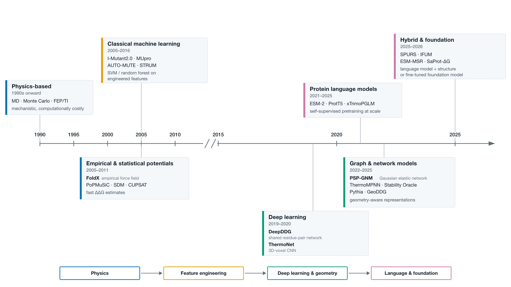
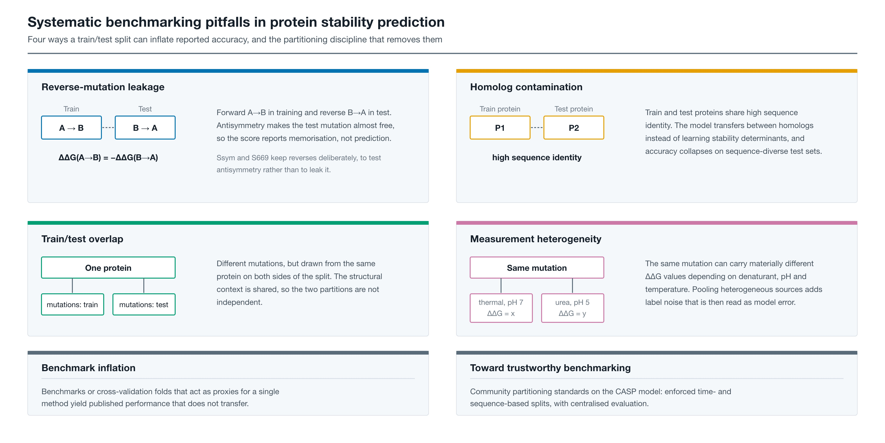
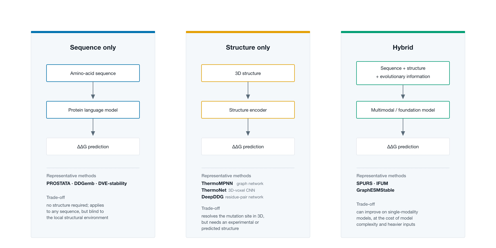
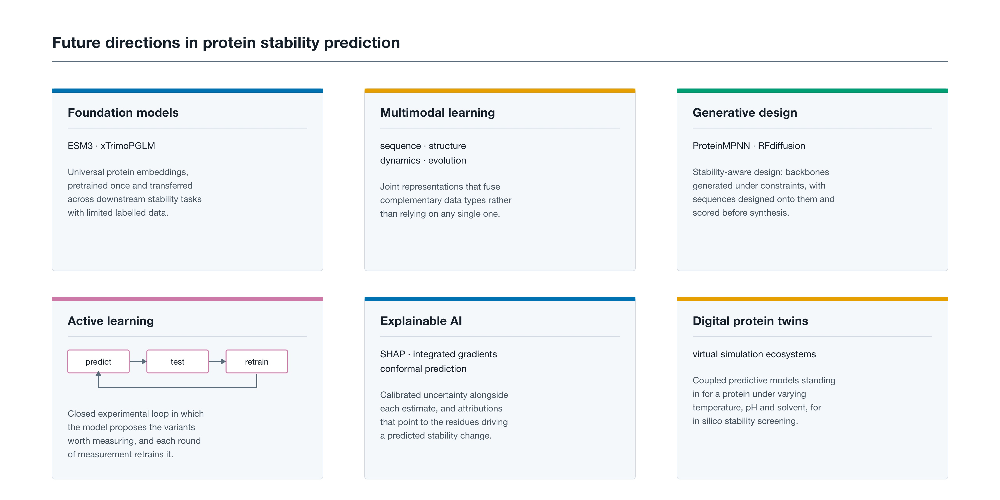

A systematic taxonomy, algorithmic comparison, and critical benchmark analysis of computational methods for predicting mutation-induced free energy changes ($\Delta\Delta G$) from 1990 to 2026.
From early empirical force fields and statistical potentials to geometric deep learning and billion-parameter foundation models.



Browse, filter, and compare computational stability models with authentic peer-reviewed citations, architecture summaries, and verified performance metrics.
A critical analysis of canonical thermodynamic databases, regression benchmarks, and high-throughput experimental datasets.
Direct, interactive web transcriptions of Tables 1 through 5 from the manuscript. Click headers to sort, search across cells, or export to CSV.
Key failure modes and methodological artifacts identified in the review that lead to inflated performance claims in literature.
Thermodynamic reversibility requires $\Delta\Delta G_{AB} = -\Delta\Delta G_{BA}$. If forward ($A \to B$) and reverse ($B \to A$) variants are split across train and test partitions, the model easily memorizes the inverse rather than learning genuine stability physics.
Splitting datasets by random mutation assignment rather than protein family clusters allows models to overfit to specific protein scaffolds. Test sets must enforce <25% sequence identity to training sets to test true generalizability.
Most supervised models exhibit severe prediction bias toward destabilizing scores ($\Delta\Delta G < 0$). Models must be audited on symmetric datasets like Ssym and S669 to confirm that $\Delta\Delta G_{AB} + \Delta\Delta G_{BA} \approx 0$.
Thermodynamic free energy depends strongly on temperature, pH, and denaturant choice (urea vs. GdnHCl). Conflating different experimental conditions without explicitly conditioning on pH/temperature introduces irreducible label noise.
Pearson Correlation Coefficient (PCC) is highly sensitive to extreme outliers and data distribution skews. Authors must report Spearman Rank Correlation (SRCC) and Mean Absolute Error (MAE in kcal/mol) for reliable evaluation.
Zero-shot predictions from foundation models (ESM-2, SaProt, Pythia) reflect general evolutionary and structural priors, whereas supervised heads risk learning dataset-specific artifacts. Both evaluation regimes must be clearly delineated.
Strategic opportunities for expanding computational stability modeling in the era of generative biology.

This comprehensive benchmark review, taxonomy, and companion portal are spearheaded by the Computational Biology Group at IIIT Delhi in collaboration with KTH Royal Institute of Technology.
Principal Investigator: Dr. N Arul Murugan
Department of Computational Biology, Indraprastha Institute of Information Technology Delhi (IIIT-Delhi)
Focuses on molecular biophysics, biomolecular dynamics, protein thermodynamic stability modeling, computer-aided drug design, and computational neurotherapeutics.
Visit Neurocare-eLAB WebsitePrincipal Investigator: Dr. Jaspreet Kaur Dhanjal
Department of Computational Biology, Indraprastha Institute of Information Technology Delhi (IIIT-Delhi)
Focuses on structural bioinformatics, molecular recognition, translational therapeutics, mutation impact profiling, and macromolecular interactions.
Visit Lab WebsitePrincipal Investigator: Dr. Vaibhav Srivastava
Department of Engineering Sciences in Chemistry, Biotechnology and Health, KTH Royal Institute of Technology, Stockholm, Sweden
Pioneers applied biocatalysis, enzyme thermodynamics and engineering, mass-spectrometry proteomics, and carbohydrate-active enzyme stabilization.
Visit KTH Royal InstituteAcademic Department: IIIT-Delhi
Indraprastha Institute of Information Technology Delhi, New Delhi, India
Interdisciplinary academic center conducting cutting-edge research in machine learning, computational biophysics, structural bioinformatics, and systems medicine.
Visit Department WebsiteIf this repository, benchmark taxonomy, or review aids your research, please cite the manuscript.
Paul, P., Patel, P., Dhanjal, J. K., Srivastava, V., & Murugan, N. A. (2026). "A Contemporary Review on Physics-based and Data-Driven Models for Protein Stability Prediction." Submitted for publication.
Publication to this review is pending — official journal link and DOI will be added soon.
@article{Paul2026ProteinStabilityReview,
author = {Paul, Prateek and Patel, Pallavi and Dhanjal, Jaspreet Kaur and Srivastava, Vaibhav and Murugan, N. Arul},
title = {A Contemporary Review on Physics-based and Data-Driven Models for Protein Stability Prediction},
journal = {Submitted for publication},
year = {2026}
}